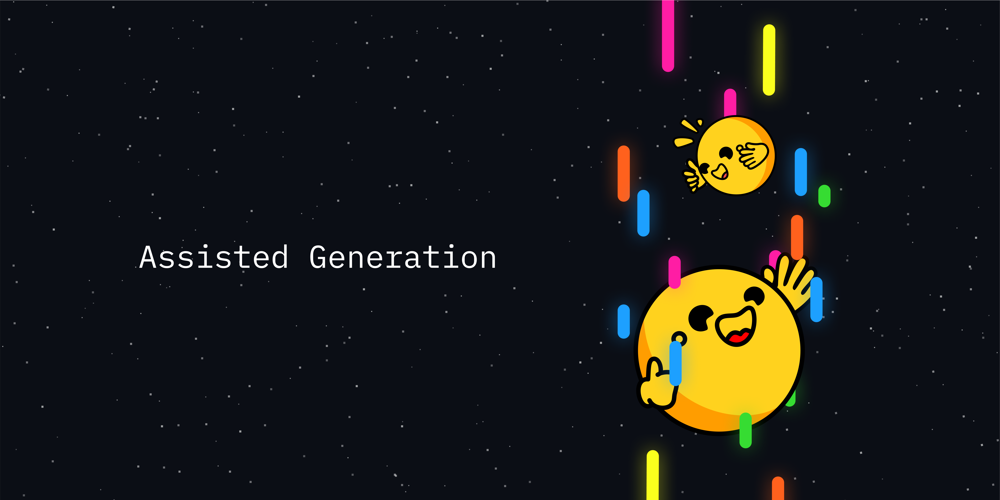
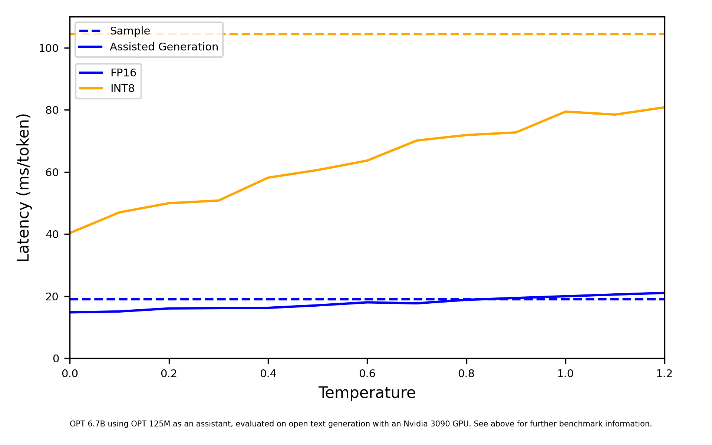

Assisted Generation: A New Direction Toward Low-Latency Text Generation
Based on the Hugging Face blog post Assisted Generation: a new direction toward low-latency text generation by João Gante (May 2023; DOI: 10.57967/hf/0638), augmented with a step-by-step Transformer matrix visualization and interactive tensor-shape simulator showing exactly why feeding $L$ tokens into a causal decoder produces $L$ next-token logit distributions in a single forward pass.

Large language models are all the rage these days, with many companies investing significant resources to scale them up and unlock new capabilities. However, as humans with ever-decreasing attention spans, we also dislike their slow response times. Latency is critical for a good user experience, and smaller models are often used despite their lower quality (for example, in interactive code completion).
Why is text generation so slow? What is preventing you from deploying low-latency large language models without going bankrupt? In this post, we revisit the bottlenecks for autoregressive text generation, trace the exact matrix multiplications inside a causal Transformer forward pass, and introduce assisted generation—a decoding method that reduces latency by up to $10\times$ on commodity hardware.
Understanding text generation latency
The core of modern text generation is straightforward to understand. Let's look at the central piece, the ML model. Its input contains a text sequence, which includes the text generated so far, and potentially other model-specific components (for instance, Whisper also has an audio input). The model takes the input and runs a forward pass: the input is fed to the model and passed sequentially along its layers until the unnormalized log probabilities for the next token are predicted (also known as logits). A token may consist of entire words, sub-words, or even individual characters, depending on the model. Jay Alammar's Illustrated GPT-2 is a great reference if you'd like to dive deeper into this part of text generation.
A model forward pass gets you the logits for the next token, which you can freely manipulate (e.g., set the probability of undesirable words or sequences to $0$). The following step in text generation is to select the next token from these logits. Common strategies include picking the most likely token, known as greedy decoding, or sampling from their distribution, also called multinomial sampling. Chaining model forward passes with next-token selection iteratively gets you text generation.
From the description above, the latency bottleneck in text generation is clear: running a model forward pass for large models is slow, and you may need to do hundreds of them in a sequence. But let's dive deeper: why are forward passes slow? Forward passes are typically dominated by matrix multiplications and, as communication-avoiding matrix multiplication analysis shows, memory bandwidth is the limitation in this operation (e.g., moving bytes from GPU HBM/VRAM to the GPU's compute cores). In other words:
Traditionally, you have three main avenues to get the most out of text generation, all tackling the performance of the model forward pass:
- Hardware-specific model optimizations: Your device may be compatible with FlashAttention, which speeds up the attention layer through an SRAM-aware reorder of operations, or INT8 quantization, which reduces the byte footprint of the model weights.
- Batching concurrent requests: When you have concurrent text generation requests, you can batch the inputs and massively increase throughput with only a small latency penalty. The model layer weights loaded into the device are now reused across several input rows in parallel, which means you get many more tokens out for approximately the same memory bandwidth burden. The catch with batching is that you need additional device memory (or to offload memory somewhere)—at the extreme end of this spectrum, projects like FlexGen optimize throughput at the expense of latency.
# Example showcasing the impact of batched generation. Measurement device: RTX 3090
from transformers import AutoModelForCausalLM, AutoTokenizer
import time
tokenizer = AutoTokenizer.from_pretrained("distilgpt2")
model = AutoModelForCausalLM.from_pretrained("distilgpt2").to("cuda")
inputs = tokenizer(["Hello world"], return_tensors="pt").to("cuda")
def print_tokens_per_second(batch_size):
new_tokens = 100
cumulative_time = 0
# warmup
model.generate(
**inputs, do_sample=True, max_new_tokens=new_tokens, num_return_sequences=batch_size
)
for _ in range(10):
start = time.time()
model.generate(
**inputs, do_sample=True, max_new_tokens=new_tokens, num_return_sequences=batch_size
)
cumulative_time += time.time() - start
print(f"Tokens per second: {new_tokens * batch_size * 10 / cumulative_time:.1f}")
print_tokens_per_second(1) # Tokens per second: 418.3
print_tokens_per_second(64) # Tokens per second: 16266.2 (~39x more tokens per second)- Tensor Parallelism across multiple devices: If you have multiple GPUs available, you can distribute the workload using Tensor Parallelism to obtain lower latency. With Tensor Parallelism, you split the memory bandwidth burden across multiple devices, at the cost of inter-device communication bottlenecks and running multiple GPUs (e.g., spreading a 17B parameter model across 4 GPUs reduces latency by $\sim 1.5\times$).
These three types of improvements can be used in tandem, resulting in high-throughput serving systems like Text Generation Inference (TGI). However, for a single stream (batch size $1$), after applying hardware-specific optimizations, there are limited options to reduce latency—and the existing hardware options are expensive. Let's fix that!
Language decoder forward pass, revisited
You read above that each model forward pass yields the logits for the next token, but that is actually an incomplete description. During text generation, the typical iteration consists of the model receiving as input the latest generated token, plus cached internal key/value computations for all previous inputs, returning only the next token's logits. Caching is used to avoid redundant computations, resulting in faster single-token forward passes, but it is not mandatory (and can be used partially).
When caching is disabled (or when you feed a multi-token chunk on top of a cached prefix), the input contains a sequence of tokens and the output contains the logits corresponding to the next token for all positions in the sequence simultaneously! The logits at position $N$ correspond to the distribution for the next token as if the input consisted only of the first $N$ tokens, ignoring all subsequent tokens in the sequence. In the particular case of greedy decoding, if you pass a generated sequence as input and apply the argmax operator to the resulting logits, you will obtain the exact generated sequence back:
from transformers import AutoModelForCausalLM, AutoTokenizer
tok = AutoTokenizer.from_pretrained("distilgpt2")
model = AutoModelForCausalLM.from_pretrained("distilgpt2")
inputs = tok(["The"], return_tensors="pt")
generated = model.generate(**inputs, do_sample=False, max_new_tokens=10)
forward_confirmation = model(generated).logits.argmax(-1)
# We exclude the opposing tips from each sequence: the forward pass returns
# the logits for the next token, so it is shifted by one position.
print(generated[0, 1:].tolist() == forward_confirmation[0, :-1].tolist()) # TrueThis means that you can use a model forward pass for a completely different purpose: in addition to feeding some tokens to predict a single next token, you can pass a candidate sequence to the model and verify in one pass whether the model would generate that same sequence (or part of it).
Matrix Deep Dive: Why Feeding $L$ Tokens Produces $L$ Next-Token Logits Simultaneously
In a Transformer, the reason feeding $L$ tokens into the model produces $L$ sets of next-token logits simultaneously comes down to matrix multiplication dimensions: every linear projection, MLP, and the final Language Modeling (LM) head operates row-by-row (token-by-token) in parallel, while only the Attention matrix mixes tokens—and strictly backward in time.
Let's trace the exact math and matrix shapes through a Transformer for a sequence of $L=5$ tokens (["The", "cat", "sat", "on", "the"]), with hidden dimension $d$ and vocabulary size $V$.
1. The Input Embedding Matrix ($X$)
When caching is disabled, you pass all $L=5$ token IDs at once. Looking up their embeddings yields a 2D matrix $X \in \mathbb{R}^{L \times d}$ (ignoring $\text{batch size} = 1$), where each row $x_i \in \mathbb{R}^{1 \times d}$ is the embedding vector for token $i$:
— $x_1$ ("The") — |
— $x_2$ ("cat") — |
— $x_3$ ("sat") — |
— $x_4$ ("on") — |
— $x_5$ ("the") — |
2. $Q, K, V$ Projections (Row-Independent Math)
Next, we multiply $X$ by the learned weight matrices $W_Q, W_K, W_V \in \mathbb{R}^{d \times d}$:
Because of how matrix multiplication works ($(5 \times d) \times (d \times d) = (5 \times d)$), Row $n$ of $Q$ depends only on Row $n$ of $X$:
| — $q_1 = x_1 W_Q$ — |
| — $q_2 = x_2 W_Q$ — |
| — $q_3 = x_3 W_Q$ — |
| — $q_4 = x_4 W_Q$ — |
| — $q_5 = x_5 W_Q$ — |
| — $x_1$ — |
| — $x_2$ — |
| — $x_3$ — |
| — $x_4$ — |
| — $x_5$ — |
| $\big|$ $W_{Q,:,1}$ $\big|$ |
$\big|$ $\cdots$ $\big|$ |
$\big|$ $W_{Q,:,d}$ $\big|$ |
Tokens haven't interacted at all yet. Every token row is simply projected in parallel, reusing the loaded weight matrix $W_Q$ across all $5$ rows at once.
3. Causal Self-Attention (Where Prefix Isolation Happens)
Now comes the only place in the entire Transformer where rows talk to each other:
First, multiplying $Q \in \mathbb{R}^{5 \times d}$ by $K^T \in \mathbb{R}^{d \times 5}$ produces a $5 \times 5$ pairwise score matrix. We add the Causal Mask $M$, which puts $0$ on and below the diagonal and $-\infty$ above the diagonal:
| $\frac{q_1 k_1^T}{\sqrt{d}}$ | $-\infty$ | $-\infty$ | $-\infty$ | $-\infty$ |
| $\frac{q_2 k_1^T}{\sqrt{d}}$ | $\frac{q_2 k_2^T}{\sqrt{d}}$ | $-\infty$ | $-\infty$ | $-\infty$ |
| $\frac{q_3 k_1^T}{\sqrt{d}}$ | $\frac{q_3 k_2^T}{\sqrt{d}}$ | $\frac{q_3 k_3^T}{\sqrt{d}}$ | $-\infty$ | $-\infty$ |
| $\frac{q_4 k_1^T}{\sqrt{d}}$ | $\frac{q_4 k_2^T}{\sqrt{d}}$ | $\frac{q_4 k_3^T}{\sqrt{d}}$ | $\frac{q_4 k_4^T}{\sqrt{d}}$ | $-\infty$ |
| $\frac{q_5 k_1^T}{\sqrt{d}}$ | $\frac{q_5 k_2^T}{\sqrt{d}}$ | $\frac{q_5 k_3^T}{\sqrt{d}}$ | $\frac{q_5 k_4^T}{\sqrt{d}}$ | $\frac{q_5 k_5^T}{\sqrt{d}}$ |
When we apply $\operatorname{softmax}$ row-by-row, $e^{-\infty} = 0$. This gives our lower-triangular attention weight matrix $A \in \mathbb{R}^{5 \times 5}$, which we multiply by $V \in \mathbb{R}^{5 \times d}$ to get the output hidden states $H \in \mathbb{R}^{5 \times d}$:
| — $h_1$ — |
| — $h_2$ — |
| — $h_3$ — |
| — $h_4$ — |
| — $h_5$ — |
| $1.0$ | $0$ | $0$ | $0$ | $0$ |
| $a_{2,1}$ | $a_{2,2}$ | $0$ | $0$ | $0$ |
| $a_{3,1}$ | $a_{3,2}$ | $a_{3,3}$ | $0$ | $0$ |
| $a_{4,1}$ | $a_{4,2}$ | $a_{4,3}$ | $a_{4,4}$ | $0$ |
| $a_{5,1}$ | $a_{5,2}$ | $a_{5,3}$ | $a_{5,4}$ | $a_{5,5}$ |
— $v_1$ ("The") — |
— $v_2$ ("cat") — |
— $v_3$ ("sat") — |
— $v_4$ ("on") — |
— $v_5$ ("the") — |
Look closely at what each row $h_N$ actually equals when you expand the matrix multiplication:
- Row 1 ($h_1$): $1.0 v_1 + 0 v_2 + 0 v_3 + 0 v_4 + 0 v_5 = v_1 \longrightarrow$ Exact same result as if you only fed
["The"]. - Row 2 ($h_2$): $a_{2,1} v_1 + a_{2,2} v_2 \longrightarrow$ Exact same result as if you only fed
["The", "cat"]. - Row 3 ($h_3$): $a_{3,1} v_1 + a_{3,2} v_2 + a_{3,3} v_3 \longrightarrow$ Exact same result as if you only fed
["The", "cat", "sat"]. - Row $N$ ($h_N$): $\sum_{j=1}^{N} a_{N,j} v_j \longrightarrow$ Mathematically identical to running a separate forward pass on just the first $N$ tokens!
4. The Final LM Head (Why You Get $L$ Logit Vectors Out)
After passing $H \in \mathbb{R}^{5 \times d}$ through the feed-forward layers (which also operate independently on each row), we reach the final Language Modeling Head, which multiplies $H$ by the unembedding matrix $W_{\text{LM}} \in \mathbb{R}^{d \times V}$ (where $V$ is the vocabulary size, e.g., $50{,}257$):
Written out as matrices:
| $z_{1,1}$ | $z_{1,2}$ | $\cdots$ | $z_{1,V}$ |
| $z_{2,1}$ | $z_{2,2}$ | $\cdots$ | $z_{2,V}$ |
| $z_{3,1}$ | $z_{3,2}$ | $\cdots$ | $z_{3,V}$ |
| $z_{4,1}$ | $z_{4,2}$ | $\cdots$ | $z_{4,V}$ |
| $z_{5,1}$ | $z_{5,2}$ | $\cdots$ | $z_{5,V}$ |
— $h_1$ (context: "The") — |
— $h_2$ (context: "The cat") — |
— $h_3$ (context: "The cat sat") — |
— $h_4$ (context: "The cat sat on") — |
— $h_5$ (context: "The cat sat on the") — |
| $\big|$ $w_1$ $\big|$ |
$\big|$ $w_2$ $\big|$ |
$\big|$ $\cdots$ $\big|$ |
$\big|$ $w_V$ $\big|$ |
Now look at the output matrix $Z \in \mathbb{R}^{5 \times V}$:
- Row 1 ($z_1 \in \mathbb{R}^{1 \times V}$) is $h_1 W_{\text{LM}}$: the vocabulary logits predicting Token 2 (given Token 1). $\operatorname{argmax}(z_1) \to \text{"cat"}$.
- Row 2 ($z_2 \in \mathbb{R}^{1 \times V}$) is $h_2 W_{\text{LM}}$: the vocabulary logits predicting Token 3 (given Tokens $1\dots 2$). $\operatorname{argmax}(z_2) \to \text{"sat"}$.
- Row 3 ($z_3 \in \mathbb{R}^{1 \times V}$) is $h_3 W_{\text{LM}}$: the vocabulary logits predicting Token 4 (given Tokens $1\dots 3$). $\operatorname{argmax}(z_3) \to \text{"on"}$.
- Row 4 ($z_4 \in \mathbb{R}^{1 \times V}$) is $h_4 W_{\text{LM}}$: the vocabulary logits predicting Token 5 (given Tokens $1\dots 4$). $\operatorname{argmax}(z_4) \to \text{"the"}$.
- Row 5 ($z_5 \in \mathbb{R}^{1 \times V}$) is $h_5 W_{\text{LM}}$: the vocabulary logits predicting Token 6 (given Tokens $1\dots 5$). $\operatorname{argmax}(z_5) \to \text{"mat"}$.
5. Contrast: Why Cached Generation Only Outputs 1 Row
When KV caching is enabled on step 5 of standard single-token generation:
- You already computed and saved $h_1, h_2, h_3, h_4$ (and their keys/values $k_{1\dots 4}, v_{1\dots 4}$) in previous steps.
- So you only pass the 5th row $x_5 \in \mathbb{R}^{1 \times d}$ (
["the"]) as input. - This computes only the 5th row of Queries $q_5 \in \mathbb{R}^{1 \times d}$, which multiplies against the cached $K^T \in \mathbb{R}^{d \times 5}$ to produce only the 5th row of the attention matrix $A_5 \in \mathbb{R}^{1 \times 5}$, yielding only the 5th hidden state $h_5 \in \mathbb{R}^{1 \times d}$.
- At the LM head, $(1 \times d) \times (d \times V) = (1 \times V)$—you get only Row 5 of the logits ($z_5$).
In normal generation, throwing away Rows $1\dots 4$ before the LM head makes sense because you already generated tokens $2\dots 5$. In Assisted Generation, however, tokens $2\dots 5$ are unverified guesses from a small draft model—so computing all $5$ rows in parallel lets the big model evaluate every single guess in one shot!
From a latency-free oracle to a small assistant model
Let's consider for a second that you have access to a magical latency-free oracle model that generates the same sequence as your model, for any given input. For argument's sake, it can't be used directly; it is limited to being an assistant to your generation procedure. Using the forward-confirmation property proved above, you could use this assistant model to get candidate output tokens followed by a single forward pass with your large model to confirm that they are indeed correct. In this utopian scenario, the latency of text generation would be reduced from $\mathcal{O}(n)$ to $\mathcal{O}(1)$, with $n$ being the number of generated tokens. For long generations, we're talking about several orders of magnitude.
Walking a step towards reality, let's assume the assistant model has lost its oracle properties. Now it's a latency-free model that gets some of the candidate tokens wrong, according to your model. Due to the causal, left-to-right nature of the task, as soon as the assistant gets a token wrong at position $k$, all subsequent candidates ($>k$) must be invalidated because their context included the rejected token. However, that does not prevent you from querying the assistant again, after correcting the wrong token using your large model's Row-$k$ logits, and repeating this process iteratively. Even if the assistant fails a few tokens, text generation still achieves a dramatic reduction in total forward passes.
Obviously, there are no latency-free assistant models. Nevertheless, it is relatively easy to find a model that approximates another model's text generation outputs—smaller versions of the same model family trained on the same data distribution often fit this property naturally (e.g., OPT-125M assisting OPT-66B, or Pythia-160M assisting Pythia-1.4B/12B). Moreover, when the difference in model sizes is an order of magnitude or more, the cost of running the smaller assistant becomes an afterthought compared to the bandwidth saved by skipping multiple large-model forward passes. You now understand the core of assisted generation.
Greedy decoding with assisted generation
Assisted generation is a balancing act. You want the assistant to quickly generate a candidate sequence while being as accurate as possible. If the assistant has poor quality, you pay the cost of running the assistant model with little to no benefit. On the other hand, optimizing the quality of the candidate sequences by picking a large assistant results in a slow drafter and a net slowdown. While we cannot automate the selection of the assistant model for every task, Hugging Face Transformers enforces one hard requirement and one dynamic heuristic to keep assistant overhead in check:
- The requirement (Shared Tokenizer): The assistant must share the exact same tokenizer as your target model. Without an identical vocabulary and token-to-ID mapping, expensive string decoding and re-encoding steps would have to run on the CPU at every speculation step, triggering device-to-host synchronization and wiping out the latency gains.
- The heuristic (Adaptive Candidate Length): Running text generation inside text generation ("Inception-style") requires one assistant forward pass per candidate token. Since some spans of output are much easier to predict than others (e.g., boilerplate code or copied entities vs. open-ended reasoning), Hugging Face tracks how many candidate tokens matched in the current step to dynamically adjust the speculation window $K$ for the next step.
Wrapping it all up, here is the original 6-step Assisted Generation loop (source code in transformers):
- Use greedy decoding to generate a certain number of candidate tokens with the assistant model, producing
candidates. The number of produced candidate tokens is initialized to5the first time assisted generation is called. - Using the target model, run a single forward pass with
candidates, obtaining next-tokenlogitsfor every candidate prefix. - Use the token selection method (
.argmax()for greedy search or.multinomial()/ rejection sampling for sampling) to get thenext_tokensfromlogits. - Compare
next_tokenstocandidatesand count the number of matching tokens from left to right: after the first mismatch, all subsequent candidates are invalidated. - Use the number of matches to slice the sequence and discard KV-cache entries related to unconfirmed candidate tokens. In
next_tokens, keep all matching tokens plus the first divergent token (which the target model just generated from a valid confirmed prefix!). - Adjust the number of candidate tokens to be produced in the next iteration: the heuristic increases it by
2if ALL candidate tokens matched, and decreases it by1otherwise (bounded below by $1$).
In Hugging Face transformers, using assisted generation requires only passing the assistant model via the assistant_model keyword argument in model.generate():
from transformers import AutoModelForCausalLM, AutoTokenizer
import torch
prompt = "Alice and Bob"
checkpoint = "EleutherAI/pythia-1.4b-deduped"
assistant_checkpoint = "EleutherAI/pythia-160m-deduped"
device = "cuda" if torch.cuda.is_available() else "cpu"
tokenizer = AutoTokenizer.from_pretrained(checkpoint)
inputs = tokenizer(prompt, return_tensors="pt").to(device)
model = AutoModelForCausalLM.from_pretrained(checkpoint).to(device)
assistant_model = AutoModelForCausalLM.from_pretrained(assistant_checkpoint).to(device)
outputs = model.generate(**inputs, assistant_model=assistant_model)
print(tokenizer.batch_decode(outputs, skip_special_tokens=True))
# ['Alice and Bob are sitting in a bar. Alice is drinking a beer and Bob is drinking a']Greedy decoding benchmark takeaways
From extensive latency benchmarks across OPT (1.3B to 66B), Whisper (Large-v2 with Tiny assistant), LLaMA, and T5 models at batch size $1$, Assisted Generation demonstrates four clear empirical rules:
1. Assistant Size Ratio ($\ge 10\times$)
Requires access to an assistant model that is at least an order of magnitude smaller than your target model (the larger the parameter gap, the lower the relative drafting overhead).
2. GPU Memory Speedups ($2\times$–$3\times$)
Delivers up to $3\times$ speedup in the presence of INT8 quantization and up to $2\times$ in FP16/BF16 when both models fit in GPU VRAM.
3. Offloading Speedups (Up to $10\times$)
When running large models that do not fit in GPU VRAM and rely on CPU/RAM weight offloading, skipping target forward passes yields up to $10\times$ wall-clock speedups.
4. Input-Grounded Tasks Shine
Achieves the highest acceptance rates on input-grounded tasks such as Automatic Speech Recognition (Whisper) and summarization, where token trajectories are strongly constrained by the input.
Sampling with assisted generation
Greedy decoding is ideal for input-grounded tasks (automatic speech recognition, translation, summarization) or factual knowledge-seeking. Open-ended tasks requiring creativity, such as conversational chatbots, typically use multinomial sampling instead. Assisted generation naturally supports multinomial sampling (via speculative rejection sampling) while preserving the exact target distribution.
However, drawing stochastic samples from a probability distribution causes a greedy assistant to disagree with the sampled trajectory more often, reducing the average number of accepted tokens per pass. You can control how sharp the probability distribution is via the temperature ($\tau$) coefficient:
- Low temperature ($\tau \to 0$): The distribution concentrates sharply on the mode, approximating greedy decoding and retaining the full latency benefits of assisted generation.
- High temperature ($\tau \gg 1$): The distribution flattens toward uniform, making next-token draws chaotic and reducing the assistant's match rate.

Future directions & related work
Assisted generation highlights a foundational shift in how we think about LLM inference: because autoregressive generation is memory-bandwidth bound rather than compute bound, we do not need to spend a full homogeneous forward pass of a massive model to discover every single token. Large subsections of generated text can be drafted by models that are a small fraction of the size and verified in parallel through the causal attention matrix.
Related foundational papers
- Blockwise Parallel Decoding for Deep Autoregressive Models (Stern et al., Google Brain, NeurIPS 2018) — Early exploration of parallel multi-token proposal and single-pass verification.
- Fast Inference from Transformers via Speculative Decoding (Leviathan et al., Google Research, ICML 2023) & Accelerating Large Language Model Decoding with Speculative Sampling (Chen et al., DeepMind, 2023) — Introduced lossless modified rejection sampling for stochastic decoding.
- An Introduction to Speculative Decoding (NVIDIA Technical Blog Companion) — How classic Draft–Target evolved into EAGLE-3 multi-layer feature drafting and DeepSeek Multi-Token Prediction.
Citation
@misc{gante2023assisted,
author = {Joao Gante},
title = {Assisted Generation: a new direction toward low-latency text generation},
year = {2023},
url = {https://huggingface.co/blog/assisted-generation},
doi = {10.57967/hf/0638},
publisher = {Hugging Face Blog}
}